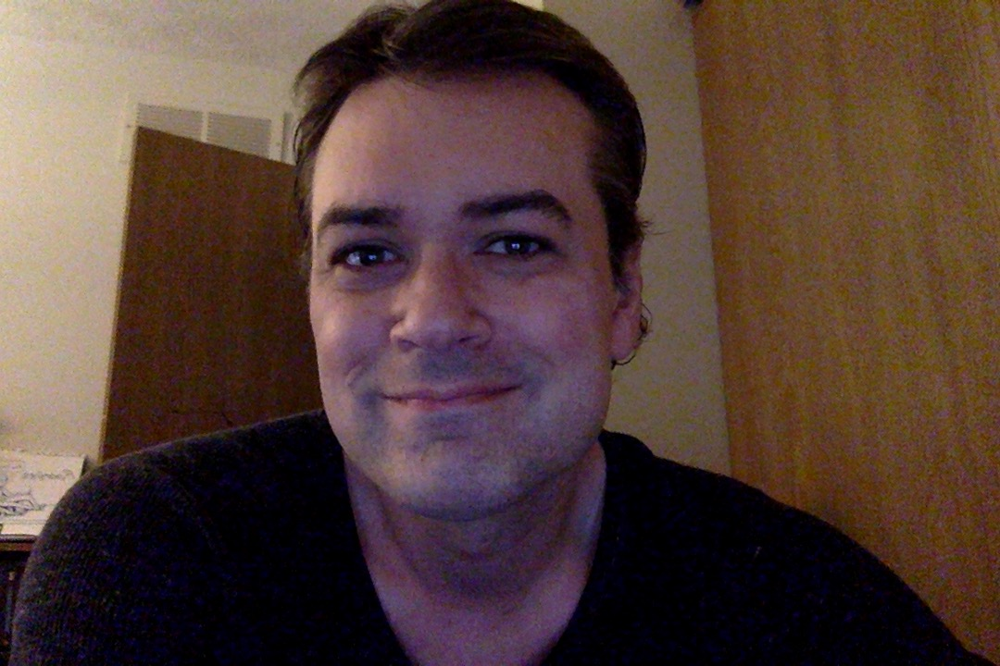

Matt Hendricks Resume

Summary
My name is Matt. I have worked in and been a part of the arts for most of
life. While doing so, I have worked numerous jobs in numerous fields, from
many types of customer service to children's education to freelance
videography. In my latter years, I hope to continue my work in the
arts while also practicing web development as a career, something that
appeals to me on both scientific and artistic levels.
Education
- Udemy
- 2022-2024
-
Online certificate studies in Microsoft Office and Web Development
- Delaware Area Career Center
- 2022-2023
- Certificate Studies in Microsoft Word, Excel, and PowerPoint
- The Second City Conservatory
- 2006-2008
- Conservatory studies in sketch comedy writing and improvisation
- The Ohio State University
- 1998-2001
- BA in Theatre Arts
- Northwest Film Institute
- Summer 1998
- Certificate studies in editing, directing, and cinematography
- Otterbein College
- 1997-1998
- Undergraduate studies in sculpture and photography
-
Granted scholarships for artwork portfolio and academic excellence
Work Experience
- Freelance Videographer
- 2006-present
- Editor, director, writer, and producer
- Created various video projects including
- Music videos
- Short films/sketches
- Independent features
- Commercial spots
- Other People's Movies
- November 2018-present
-
Head editor/writer of hundreds of reviews, articles, lists, and essays
- The Strand Theater (Delaware, OH)
- April 2023-present
- Cash handling, computer work, and customer service
- Named Employee of the Month in June of 2023
- AMC Theaters (Columbus, OH)
- April 2018-May 2021
- Bartender
- Cash handling, customer service, cocktail drink mixing
-
Named Employee of the Month twice in May of 2018 and September of 2019
- CATCO Theatre (Columbus, OH)
- October 2014-April 2017
- Videographer
-
Director, editor, and producer for the company's video promotional ads
- Phoenix Theatre For Children/CATCO Is Kids
- June 2010-June 2017
-
Summer camp film instructor to children aged 6-18, taught them how to
write, film, and edit their own productions
- Taste Of Cinema
- January 2015-December 2016
- Wrote over twenty critical film articles/lists
Skills
- Writing: ⭐️⭐️⭐️⭐️⭐️
- Videography: ⭐️⭐️⭐️⭐️
- Pet Care: ⭐️⭐️⭐️⭐️⭐️
- Sculpture:⭐️⭐️⭐️⭐️⭐️
- Web Development: ⭐️⭐️⭐️
Awards/Accomplishments
-
Placed in the top 50 in the 2020 Cinequest Screenwriting Competition for
my comedy pilot, Film Camp
-
Accepted into the 2019 IFS Film Festival for my feature film, I'm Not
Mine
-
Honorable mention in the 2019 Columbus International Film Festival for
my feature film, I'm Not Mine
-
Second-Rounder in the 2015 Austin Film Festival Screenwriting
Competition for my unproduced screenplays, Midnight Angel and Paradise
Playground
-
Second-Rounder in the 2014 Cinequest Screenwriting Competition for my
unproduced screenplay, Mr. Majick
-
Winner of the 2008 Second City Student Film Festival for my short film,
Roomies
Other